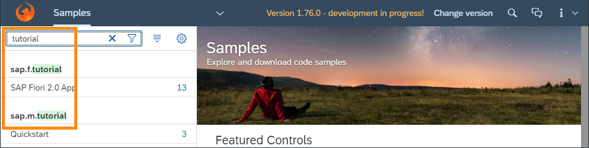

What's New in OpenUI5 1.75
With this release OpenUI5 is upgraded from version 1.74 to 1.75.
New Features
| Browser and Platform Support OpenUI5 now supports the latest Chromium-based version of Microsoft Edge. The next long-term maintenance OpenUI5 release that comes after 1.71 will be the last release to support the legacy EdgeHTML-based version of Microsoft Edge. For more information, see Browser and Platform Support. |
Improved Features
|
Card Explorer We have introduced a schema validation feature in our samples in the Card Explorer. With this option, developers can see a more detailed report for mistakes inside the card manifest. Things like wrong names of properties, bad property types or bad structures are easily spotted. For more information, explore the samples in https://sapui5.hana.ondemand.com/test-resources/sap/ui/integration/demokit/cardExplorer/webapp/index.html#/exploreOverview/types. |
|
Currency Codes When displaying ISO currency codes using sap.ui.core.format.NumberFormat, sap.ui.model.type.Currency or sap.ui.model.odata.type.Currency, the currency code is now displayed by default after the amount, ignoring locale, in order to be consistent with SAP design guidelines. The core configuration parameter trailingCurrencyCode can be used to switch the behavior globally. If currency symbols are enabled (formatting option currencyCode: false), they continue to follow locale-specific placement. |
|
OpenUI5 OData V2 Messages With the new version of the OpenUI5 OData V2 model, the target of server messages is shortened by removing associated pairs of navigation properties. For example, a /SalesOrderSet('1')/ToLineItems(SalesOrderID='1',ItemPosition='10')/ToHeader/GrossAmount message target gets reduced to /SalesOrderSet('1')/GrossAmount if the ToLineItems and ToHeader navigation properties have the same relationship in the service metadata. If the second navigation property references a collection, the message target path is reduced only if the referenced entity is the same as without the navigation. |
|
OpenUI5 OData V4 Model The new version of the OpenUI5 OData V4 model introduces the following features:
For more information, see OData V4 Model, the API Reference, and the Samples in the Demo Kit. |
|
Title Support in Nested Components The title property can now also be defined on routing targets of type Component. When set with a binding syntax, it is resolved in the context of the root view of the component loaded by this target. The router of a nested component may also have a title property defined on its own target(s) and eventually fire its own titleChanged event once such a target is displayed. A new configuration propagateTitle allows the titleChanged event to propagate from an individual Component target to the router of its parent component. In the routing configuration, this can also be enabled for all Component targets, so that it is not necessary to define the propagateTitle property on each Component target. For more information, see Using the title Property in Targets and Enabling Routing in Nested Components. In addition, the Sample application introduced in the previous release to feature routing of nested components has been enhanced. It now shows how the new title definition and title propagation could be used in an application built with nested (or reuse) components. |
Improved Controls
|
sap.m.InitialPagePattern We have introduced the initial page floorplan as a Demo Kit sample. The floorplan allows users to navigate to a single object to view or edit it. The interaction point on the screen is a single input field and it relies on assisted input to direct the user to the object in as few steps as possible (using features such as value help and live search). For more information, see the CardSAP Fiori Design Guidelines and the Sample. |
| sap.m.Link The text property can now be changed using UI adaptation at runtime. This enables key users to provide meaningful link text according to the application context. For more information, see the Samples. |
| sap.m.MessageBox We have introduced a new emphasizedAction property. This allows developers to specify which button in the dialog will receive the type Emphasized. If emphasizedAction is empty with no actions provided, the default value applies. For more information, see the API Reference and the Samples. |
| sap.m.ObjectStatus We have enhanced the sap.ui.core.IndicationColor palette. Three new colors were added to the palette as numbers 6, 7, and 8. These colors enable developers to represent statuses that don't require a meaning in the sense of good-bad, but should be visually distinguishable. For example, statuses such as Updated, New, or Active. For more information, see the API Reference and the Sample. |
|
sap.ui.integration.widgets.Card We have enhanced the capabilities of the Adaptive Card
(Experimental).
For more information, see the Adaptive Card in the Card Explorer. |
|
sap.ui.table.AnalyticalTable, sap.ui.table.Table, sap.ui.table.TreeTable A more comprehensive message text is now shown if no data is available because all table columns are hidden. |
Demo Kit Improvements
Edit on GitHub link from each OpenUI5 Documentation page We have added a direct link from each OpenUI5 documentation page to its markdown version in the openui5-docs GitHub repo. Now, when you want to send us feedback on a specific topic or even suggest a change with a pull request, we hope to save you time and efforts in finding the respective file. |
|
Search Highlighting in the Documentation and Samples sections The search highlighting functionality is now also available in the Documentation tree filter and the Samples list. 

|